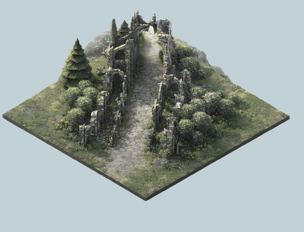
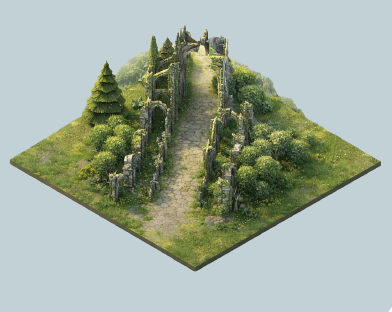
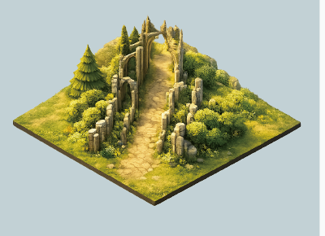
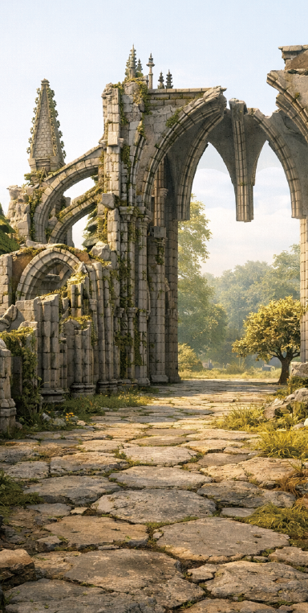

Open · serene

Lush · composed

Detailed snapshot

Immersive view
Each day's emotion composes a small isometric "space"; entering immersive mode places you first-person inside it. Renders read as warm, weathered, overgrown stone — calm but alive.